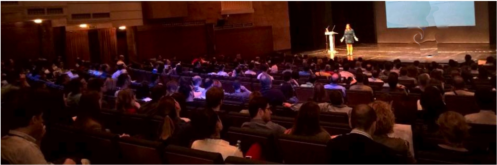

Teaching - Talks, Conferences, Workshops, Trainings
Topics
I share as a practitioner with a wide range of interest in topics:
- Software Testing - Exploratory Testing and Test Automation
- Tech Ecosystems as Context (experiences ranging from windows applications to cloud and embedded software; product develoment and IT projects)
- Social Software Testing Approaches (ensemble and pair testing, bug bash)
- Social Software Development Approaches (ensemble and pair programming, dojos, code retreats, hackathons)
- Teaching and Mentoring Testers and Programmers
- Learning and Experimentation
- Modern Agile
- Developer Productivity, Metrics and Management
- Conference Speaking
Minimalistic Speaker Rider
Since December 2019, I am on a traveling break as per requested by my teenage kids.
I'm happy to share my experiences in online conferences and deliver online workshops.
I have a full-time job at Vaisala as a principal test engineer and I teach limited amount
of sessions on the side for my side company maaretp.
I invoice 2500 euros for a full day training, and 1500 euros (+ VAT) for a conference (keynote) session.
I often waive my fees on request as long as this is also something all other speakers are doing.
I don't pay to speak - that is - if there is travel involved, I always expect those paid.
I don't participate in calls for proposals and consider invitation necessary. In encourage conference
organizers to consider all my talks on this site as proposals you can consider,
and I would be happy to deliver if I can make the schedule work.
My Sessions
I teach courses (0.5 days -> 3 days), also split into 2 hour sessions which is
works great for remote learning. My workshops are single-purpose sessions that
stand independent and are usually 1.5 - 2 hours. My talks are 30 - 60 minutes.
My free public sessions are posted under Exploratory Testing Academy tito.